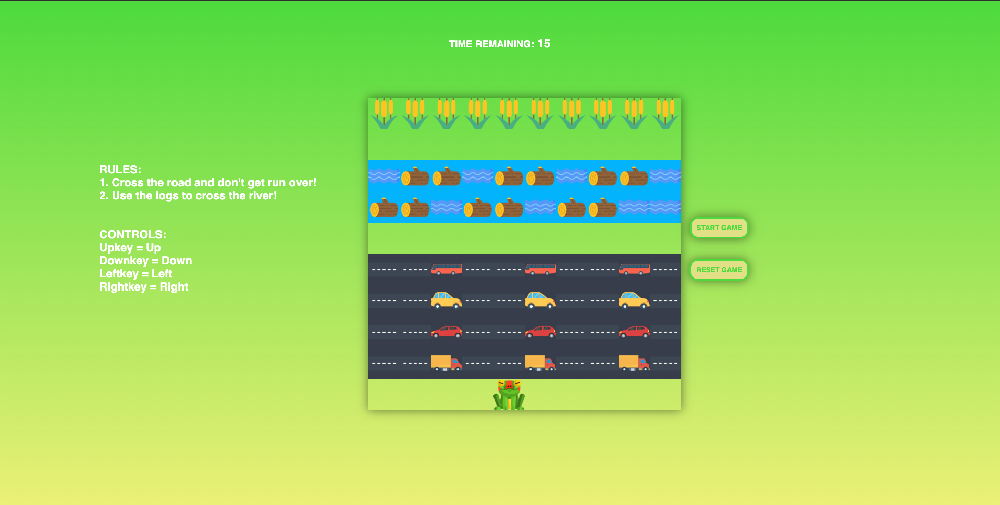
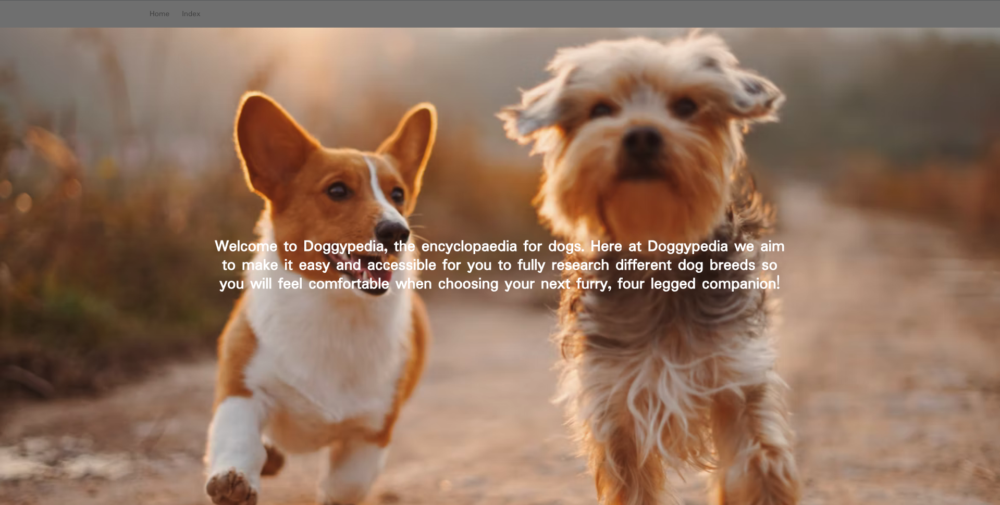
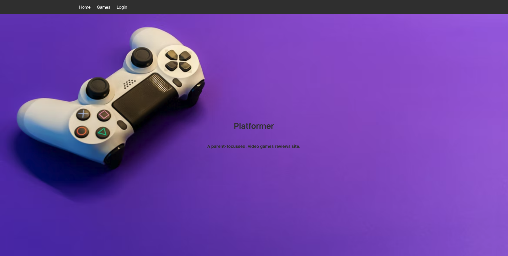
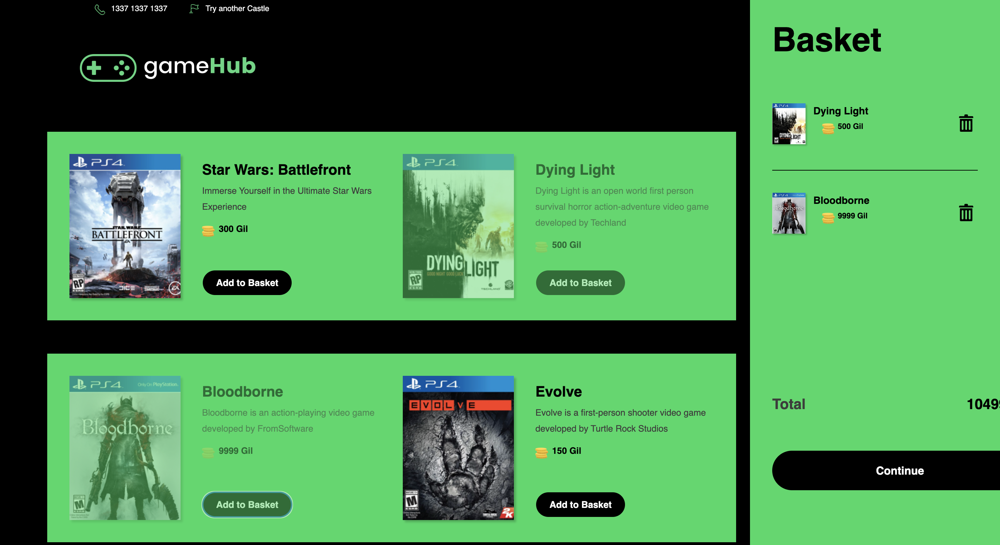

GA SEI Project 1

For my first project in the General Assembly Software Engineering Immersive Course, i was tasked to make grid-based game inspired by the classic arcade title Frogger, utilising the JavaScript skills i have acquired up to this point.
Frogger is a grid-based game where the player,
a frog, starts at the bottom of the grid, and must travel to the
top of the grid to beat the game. The player must pass two obstacles
before reaching the goal:
1. The first obstacle is a road in which cars will be
travelling left and right. The player must cross the road while avoiding
the cars.
2. The second obstacle is a river, where there will be
logs floating left and right. The player must cross the river while
avoiding the water. This will act as the reverse of the first obstacle -
instead of avoiding the logs the player must get on them to cross to the
other side and reach the goal.
To see the app, please click
here
For more info, please click
here
GA SEI Project 2

Doggypedia is a wikipedia-style project that consists of a homepage. An index page consisting of populated cards accessed from the API via HTTP GET requests using axios that the user can navigate and interact with, along with a search functionality that filters keywords when interacted with. As well as a single card page that displays data pulled from the public API.
To see the app, please click
here
For more info, please click
here
GA SEI Project 3

Accelerate Inc. is a Full-Stack MERN application with
CRUD functionality. The project was created over a one week period in a
group of three.
Accelerate Inc. is designed to be a multi-function
application aimed at administrators for managing athlete applications,
medical reporting, sessions, attendance, and article publication in a
dedicated blogging system right out of the box.
To see the app, please click
here
For more info, please click
here
GA SEI Project 4

For the final GA project, I was tasked with creating a full-stack app
with React on the frontend, and a backend built with Django.
Platformer
is a Metacritic-style video games reviews site that is parent-focussed,
where users can read reviews of video games before purchasing for their
children.
To see the app, please click
here
For more info, please click
here
E-Commerce App
This project was a test home assessment I did for a company, utilising the React framework, Redux for state management, SASS and CSS-in-JS for styles.
To see the app, please click
here